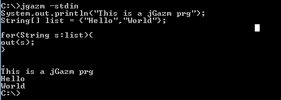
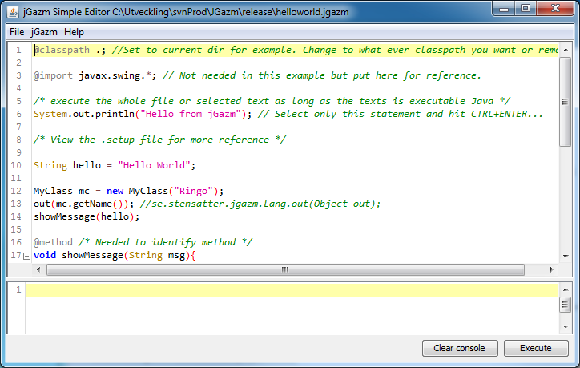

|
jGazm is a Java Language scriptning tool
designed to enable lightning fast Java scripting.
Everything the JVM has to offer is now at your service
by scripting Java code and getting instant
compilation at runtime. How does it work?
Usage: jgazm [file] [-stdin,-dump,-clean,-export:,-keepsource,-noimport,-help,-version,-compiler, -check] %arg1 %arg2 ...
. on a single line compiles and runs...

jgazmEdit.bat or open jgazm.jar as executable jar opens jGazm simple editor.

|